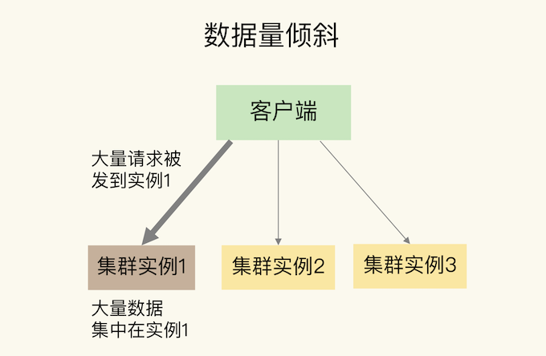
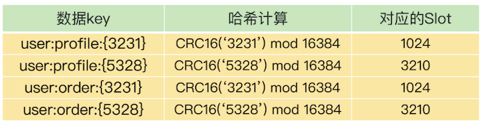
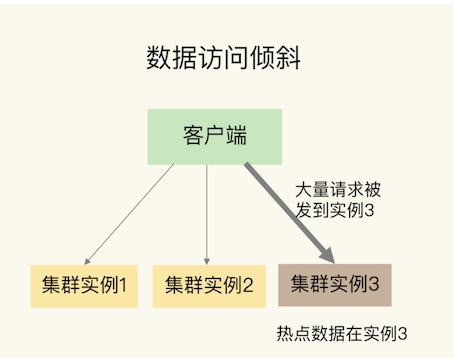
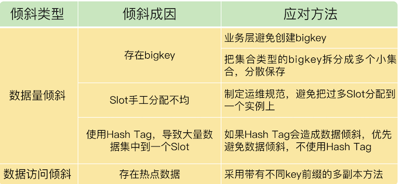

第五节 数据分布优化应对数据倾斜
在切片集群中，数据会按照一定的分布规则分散到不同的实例上保存。比如，在使用 Redis Cluster 或 Codis 时，数据都会先按照 CRC 算法的计算值对 Slot（逻辑槽）取模，同时，所有的 Slot 又会由运维管理员分配到不同的实例上。
容易导致一个问题：数据倾斜
数据倾斜有两类。
- 数据量倾斜：在某些情况下，实例上的数据分布不均衡，某个实例上的数据特别多。
- 数据访问倾斜：虽然每个集群实例上的数据量相差不大，但是某个实例上的数据是热点数据，被访问得非常频繁。
如果发生了数据倾斜，那么保存了大量数据，或者是保存了热点数据的实例的处理压力就会增大，速度变慢，甚至还可能会引起这个实例的内存资源耗尽，从而崩溃。这是我们在应用切片集群时要避免的。
1、数据量倾斜的成因和应对方法
当数据量倾斜发生时，数据在切片集群的多个实例上分布不均衡，大量数据集中到了一个或几个实例上，如下图所示：

那么，数据量倾斜是怎么产生的呢？这主要有三个原因，分别是某个实例上保存了 bigkey、Slot 分配不均衡以及 Hash Tag。
1-1 bigkey 导致倾斜
第一个原因是，某个实例上正好保存了 bigkey。
bigkey 的 value 值很大（String 类型），或者是 bigkey 保存了大量集合元素（集合类型），会导致这个实例的数据量增加，内存资源消耗也相应增加。
bigkey 的操作一般都会造成实例 IO 线程阻塞，如果 bigkey 的访问量比较大，就会影响到这个实例上的其它请求被处理的速度。
为了避免 bigkey 造成的数据倾斜，一个根本的应对方法是，在业务层生成数据时，要尽量避免把过多的数据保存在同一个键值对中。
如果 bigkey 正好是集合类型，还有一个方法，就是把 bigkey 拆分成很多个小的集合类型数据，分散保存在不同的实例上。
举个例子。
假设 Hash 类型集合 user:info 保存了 100 万个用户的信息，是一个 bigkey。
那么，我们就可以按照用户 ID 的范围，把这个集合拆分成 10 个小集合，每个小集合只保存 10 万个用户的信息（例如小集合 1 保存的是 ID 从 1 到 10 万的用户信息，小集合 2 保存的是 ID 从 10 万零 1 到 20 万的用户）。这样一来，我们就可以把一个 bigkey 化整为零、分散保存了，避免了 bigkey 给单个切片实例带来的访问压力。
1-2 Slot 分配不均衡导致倾斜
如果集群运维人员没有均衡地分配 Slot，就会有大量的数据被分配到同一个 Slot 中，而同一个 Slot 只会在一个实例上分布，这就会导致，大量数据被集中到一个实例上，造成数据倾斜。
以 Redis Cluster 为例，来介绍下 Slot 分配不均衡的情况。
但是其实并不知道数据和 Slot 的对应关系，这种做法就可能会导致大量数据正好被映射到实例 1 上的 Slot，造成数据倾斜，给实例 1 带来访问压力。
为了应对这个问题，我们可以通过运维规范，在分配之前，我们就要避免把过多的 Slot 分配到同一个实例。如果是已经分配好 Slot 的集群，我们可以先查看 Slot 和实例的具体分配关系，从而判断是否有过多的 Slot 集中到了同一个实例。如果有的话，就将部分 Slot 迁移到其它实例，从而避免数据倾斜。
1-3 Slot 迁移
不同集群上查看 Slot 分配情况的方式不同：如果是 Redis Cluster，就用 CLUSTER SLOTS 命令；如果是 Codis，就可以在 codis dashboard 上查看。
比如说，我们执行 CLUSTER SLOTS 命令查看 Slot 分配情况。命令返回结果显示，Slot 0 到 Slot 4095 被分配到了实例 192.168.10.3 上，而 Slot 12288 到 Slot 16383 被分配到了实例 192.168.10.5 上。
127.0.0.1:6379> cluster slots
1) 1) (integer) 0
2) (integer) 4095
3) 1) "192.168.10.3"
2) (integer) 6379
2) 1) (integer) 12288
2) (integer) 16383
3) 1) "192.168.10.5"
2) (integer) 6379
如果某一个实例上有太多的 Slot，就可以使用迁移命令把这些 Slot 迁移到其它实例上。在 Redis Cluster 中，我们可以使用 3 个命令完成 Slot 迁移。
CLUSTER SETSLOT：使用不同的选项进行三种设置，分别是设置 Slot 要迁入的目标实例，Slot 要迁出的源实例，以及 Slot 所属的实例。CLUSTER GETKEYSINSLOT：获取某个 Slot 中一定数量的 key。MIGRATE：把一个 key 从源实例实际迁移到目标实例。
假设我们要把 Slot 300 从源实例（ID 为 3）迁移到目标实例（ID 为 5），那要怎么做呢？
实际上，可以分成 5 步。
- 第 1 步，先在目标实例 5 上执行下面的命令，将 Slot 300 的源实例设置为实例 3，表示要从实例 3 上迁入 Slot 300。
CLUSTER SETSLOT 300 IMPORTING 3
- 第 2 步，在源实例 3 上，我们把 Slot 300 的目标实例设置为 5，这表示，Slot 300 要迁出到实例 5 上，如下所示：
CLUSTER SETSLOT 300 MIGRATING 5
- 第 3 步，从 Slot 300 中获取 100 个 key。因为 Slot 中的 key 数量可能很多，所以我们需要在客户端上多次执行下面的这条命令，分批次获得并迁移 key。
CLUSTER GETKEYSINSLOT 300 100
- 第 4 步，我们把刚才获取的 100 个 key 中的 key1 迁移到目标实例 5 上（IP 为 192.168.10.5），同时把要迁入的数据库设置为 0 号数据库，把迁移的超时时间设置为 timeout。我们重复执行 MIGRATE 命令，把 100 个 key 都迁移完。
MIGRATE 192.168.10.5 6379 key1 0 timeout
最后，我们重复执行第 3 和第 4 步，直到 Slot 中的所有 key 都迁移完成。
从 Redis 3.0.6 开始，你也可以使用 KEYS 选项，一次迁移多个 key（key1、2、3），这样可以提升迁移效率。
MIGRATE 192.168.10.5 6379 "" 0 timeout KEYS key1 key2 key3
对于 Codis 来说，我们可以执行下面的命令进行数据迁移。其中，我们把 dashboard 组件的连接地址设置为 ADDR，并且把 Slot 300 迁移到编号为 6 的 codis server group 上。
codis-admin --dashboard=ADDR -slot-action --create --sid=300 --gid=6
除了 bigkey 和 Slot 分配不均衡会导致数据量倾斜，还有一个导致倾斜的原因，就是使用了 Hash Tag 进行数据切片。
2、Hash Tag 导致倾斜
2-1 Hash Tag
Hash Tag 是指加在键值对 key 中的一对花括号{}。这对括号会把 key 的一部分括起来，客户端在计算 key 的 CRC16 值时，只对 Hash Tag 花括号中的 key 内容进行计算。
如果没用 Hash Tag 的话，客户端计算整个 key 的 CRC16 的值。
Hash Tag 是指加在键值对 key 中的一对花括号{}。这对括号会把 key 的一部分括起来，客户端在计算 key 的 CRC16 值时，只对 Hash Tag 花括号中的 key 内容进行计算。如果没用 Hash Tag 的话，客户端计算整个 key 的 CRC16 的值。
使用 Hash Tag 的好处是，如果不同 key 的 Hash Tag 内容都是一样的，那么，这些 key 对应的数据会被映射到同一个 Slot 中，同时会被分配到同一个实例上。
使用 Hash Tag 后，数据被映射到相同 Slot 的情况

其中，user:profile:{3231}和 user:order:{3231}的 Hash Tag 一样，都是 323，它们的 CRC16 计算值对 16384 取模后的值也是一样的，所以就对应映射到了相同的 Slot 1024 中。
user:profile:{5328}和 user:order:{5328}也是相同的映射结果。
2-2 Hash Tag 一般用在什么场景呢？
其实，它主要是用在 Redis Cluster 和 Codis 中，支持事务操作和范围查询。因为 Redis Cluster 和 Codis 本身并不支持跨实例的事务操作和范围查询，当业务应用有这些需求时，就只能先把这些数据读取到业务层进行事务处理，或者是逐个查询每个实例，得到范围查询的结果。
这样操作起来非常麻烦，所以，可以使用 Hash Tag 把要执行事务操作或是范围查询的数据映射到同一个实例上，这样就能很轻松地实现事务或范围查询了。
2-3 Hash Tag 导致数据倾斜
但是，使用 Hash Tag 的潜在问题，就是大量的数据可能被集中到一个实例上，导致数据倾斜，集群中的负载不均衡。那么，该怎么应对这种问题呢？
需要在范围查询、事务执行的需求和数据倾斜带来的访问压力之间，进行取舍了。
如果使用 Hash Tag 进行切片的数据会带来较大的访问压力，就优先考虑避免数据倾斜，最好不要使用 Hash Tag 进行数据切片。因为事务和范围查询都还可以放在客户端来执行，而数据倾斜会导致实例不稳定，造成服务不可用。
3、数据访问倾斜的成因和应对方法
发生数据访问倾斜的根本原因，就是实例上存在热点数据（比如新闻应用中的热点新闻内容、电商促销活动中的热门商品信息，等等）。
一旦热点数据被存在了某个实例中，那么，这个实例的请求访问量就会远高于其它实例，面临巨大的访问压力，如下图所示：

该如何应对呢？
和数据量倾斜不同，热点数据通常是一个或几个数据，所以，直接重新分配 Slot 并不能解决热点数据的问题。
通常来说，热点数据以服务读操作为主，在这种情况下，我们可以采用热点数据多副本的方法来应对。
具体做法是，我们把热点数据复制多份，在每一个数据副本的 key 中增加一个随机前缀，让它和其它副本数据不会被映射到同一个 Slot 中。这样一来，热点数据既有多个副本可以同时服务请求，同时，这些副本数据的 key 又不一样，会被映射到不同的 Slot 中。在给这些 Slot 分配实例时，我们也要注意把它们分配到不同的实例上，那么，热点数据的访问压力就被分散到不同的实例上了。
有个地方需要注意下，热点数据多副本方法只能针对只读的热点数据。如果热点数据是有读有写的话，就不适合采用多副本方法了，因为要保证多副本间的数据一致性，会带来额外的开销。
对于有读有写的热点数据，我们就要给实例本身增加资源了，例如使用配置更高的机器，来应对大量的访问压力。
4、本节小结
数据倾斜的两种情况：数据量倾斜和数据访问倾斜。
造成数据量倾斜的原因主要有三个：
- 数据中有 bigkey，导致某个实例的数据量增加；
- Slot 手工分配不均，导致某个或某些实例上有大量数据；
- 使用了 Hash Tag，导致数据集中到某些实例上。
而数据访问倾斜的主要原因就是有热点数据存在，导致大量访问请求集中到了热点数据所在的实例上。
为了应对数据倾斜问题，四个方法，

如果已经发生了数据倾斜，我们可以通过数据迁移来缓解数据倾斜的影响。Redis Cluster 和 Codis 集群都提供了查看 Slot 分配和手工迁移 Slot 的命令，你可以把它们应用起来。
关于集群的实例资源配置，一个小建议：在构建切片集群时，尽量使用大小配置相同的实例（例如实例内存配置保持相同），这样可以避免因实例资源不均衡而在不同实例上分配不同数量的 Slot。